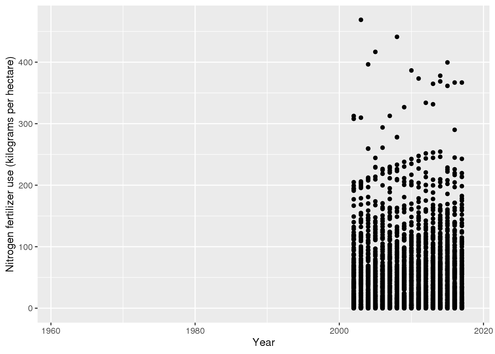

My first post.
I like penguins
library(tidyverse)
library(palmerpenguins)glimpse(penguins)## Observations: 344
## Variables: 8
## $ species <fct> Adelie, Adelie, Adelie, Adelie, Adelie, Adelie, Ade…
## $ island <fct> Torgersen, Torgersen, Torgersen, Torgersen, Torgers…
## $ bill_length_mm <dbl> 39.1, 39.5, 40.3, NA, 36.7, 39.3, 38.9, 39.2, 34.1,…
## $ bill_depth_mm <dbl> 18.7, 17.4, 18.0, NA, 19.3, 20.6, 17.8, 19.6, 18.1,…
## $ flipper_length_mm <int> 181, 186, 195, NA, 193, 190, 181, 195, 193, 190, 18…
## $ body_mass_g <int> 3750, 3800, 3250, NA, 3450, 3650, 3625, 4675, 3475,…
## $ sex <fct> male, female, female, NA, female, male, female, mal…
## $ year <int> 2007, 2007, 2007, 2007, 2007, 2007, 2007, 2007, 200…library(here)## here() starts at /home/hpmcdona/DASC-Blogfertilizer <- read_csv(here::here("data", "tidytuesday","data","2020","2020-09-01",
"cereal_crop_yield_vs_fertilizer_application.csv"))## Parsed with column specification:
## cols(
## Entity = col_character(),
## Code = col_character(),
## Year = col_double(),
## `Cereal yield (tonnes per hectare)` = col_double(),
## `Nitrogen fertilizer use (kilograms per hectare)` = col_double()
## )glimpse(fertilizer)## Observations: 11,965
## Variables: 5
## $ Entity <chr> "Afghanistan", "Afg…
## $ Code <chr> "AFG", "AFG", "AFG"…
## $ Year <dbl> 1961, 1962, 1963, 1…
## $ `Cereal yield (tonnes per hectare)` <dbl> 1.1151, 1.0790, 0.9…
## $ `Nitrogen fertilizer use (kilograms per hectare)` <dbl> NA, NA, NA, NA, NA,…ggplot(fertilizer, aes(y =`Nitrogen fertilizer use (kilograms per hectare)`, x = Year)) + geom_point()## Warning: Removed 8951 rows containing missing values (geom_point).